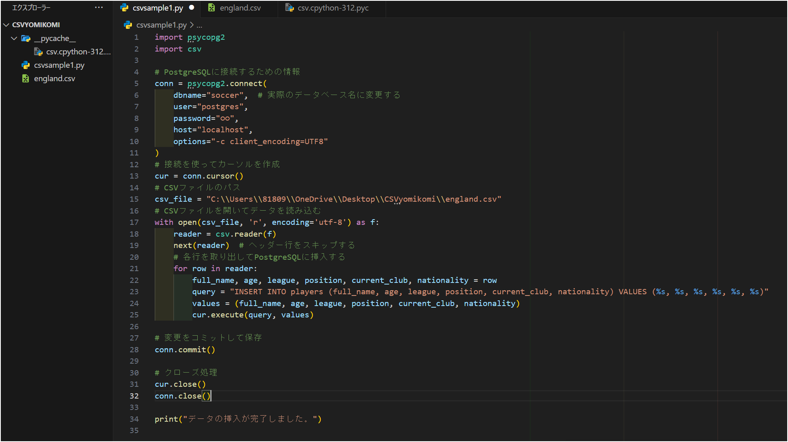
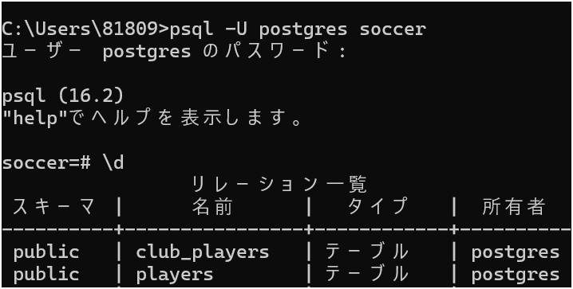
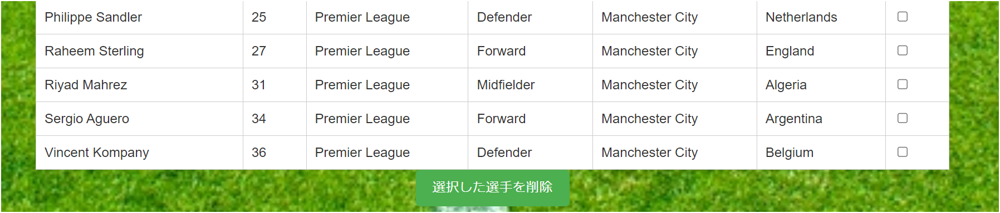
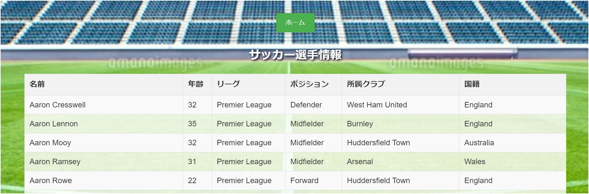
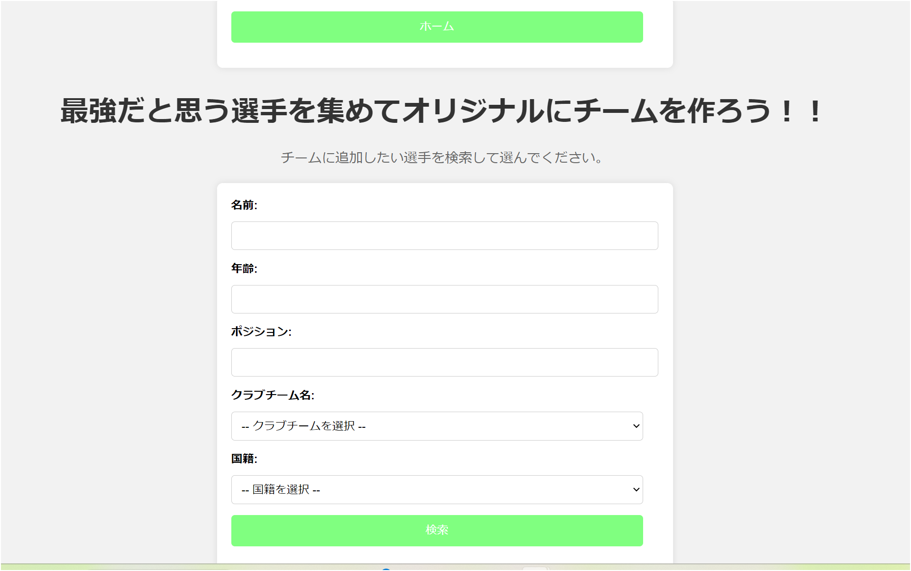
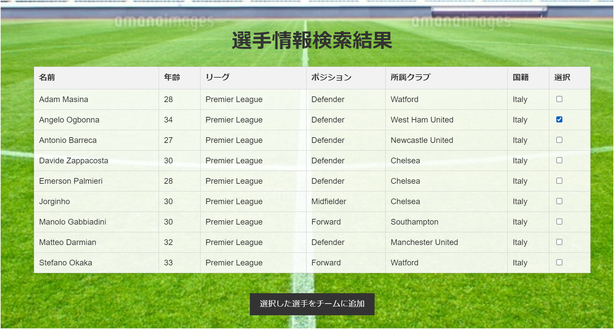
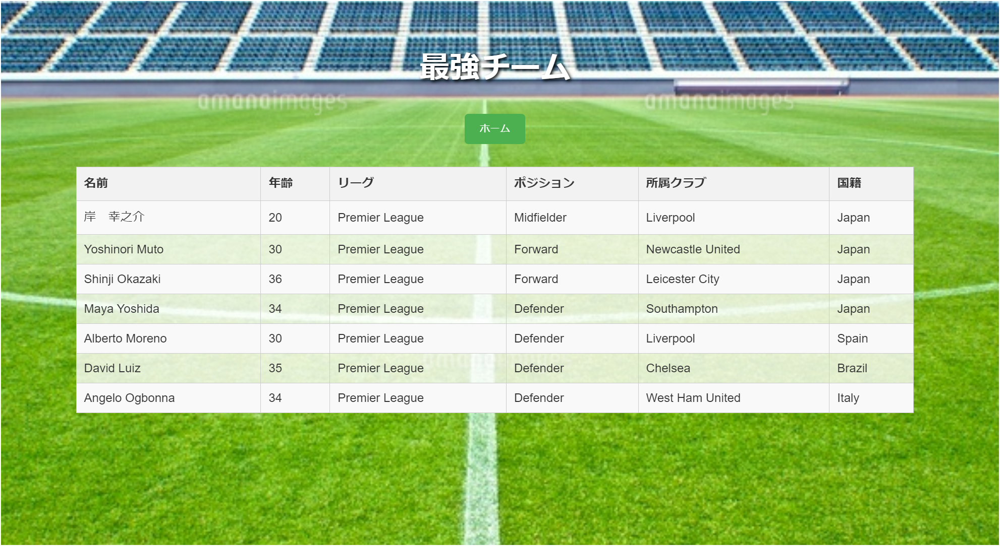

使用言語：HTML、CSS、Javascript、Java（JSP）、Postgres
PythonでCSVの挿入
１：プレミアリーグの選手一覧
２：オリジナルチーム用
データベース
プルダウン機能の追加
<label for="search_club">クラブチーム名:</label>
<select id="search_club" name="search_club">
<option value="">-- クラブチームを選択 --</option>
<%
String driverClassName =
"org.postgresql.Driver";
String url =
"jdbc:postgresql://localhost/soccer";
String user = "postgres";
String password = "○○";
Connection connection = null;
Statement statement = null;
ResultSet resultSet = null;
try {
Class.forName(driverClassName);
ここ！！！
connection =
DriverManager.getConnection(url, user, password);
ここ！！
statement =
connection.createStatement();
String query = "SELECT
DISTINCT current_club FROM players ORDER BY current_club";
resultSet =
statement.executeQuery(query);
ここ！！ while
(resultSet.next()) {
String
club = resultSet.getString("current_club");
%>
<option value="<%= club %>"><%=
club %></option>
<%
}
} catch (Exception e) {
e.printStackTrace();
} finally {
try {
if
(resultSet != null) resultSet.close();
if
(statement != null) statement.close();
if
(connection != null) connection.close();
} catch (Exception e)
{
e.printStackTrace();
}
}
%>
</select>
ここに工夫したコードを書く
ここでも選手の絞り込みができます
選択した選手を削除機能
選手一覧
オリジナルチームの選手検索機能
オリジナルチームの選手追加
オリジナルチーム一覧
